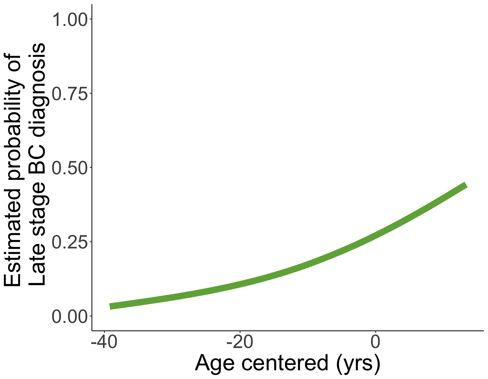
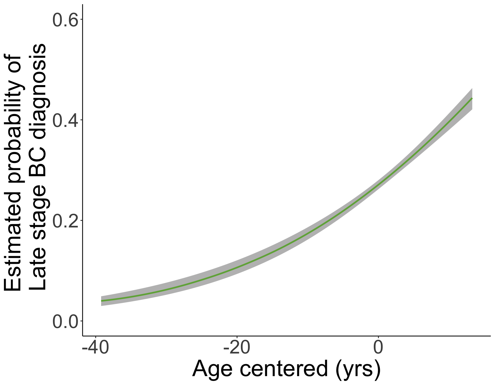
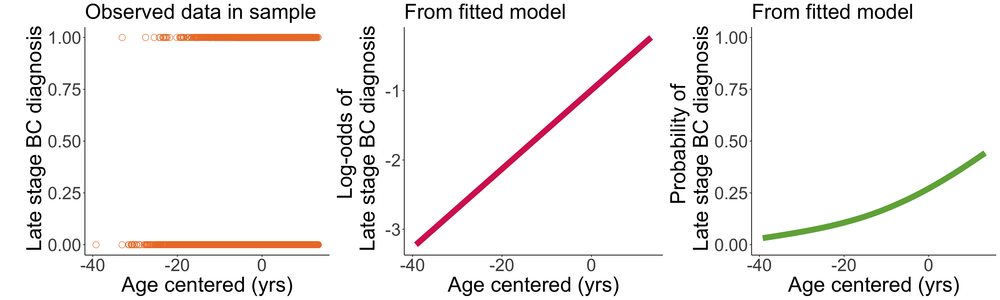

Lesson 7: Prediction and Visualization in Simple Logistic Regression
Learning Objectives
Make transformation between logistic regression and estimated/predicted probability.
Construct confidence interval for predicted probability.
Visualize the predicted probability (and its confidence intervals).
Recall our example: Late stage breast cancer diagnosis
- Recall that we fitted a simple logistic regression for late stage breast cancer diagnosis using the predictor, age:
bc_reg = glm(Late_stage_diag ~ Age_c, data = bc, family = binomial)
tidy(bc_reg, conf.int=T) %>% gt() %>% tab_options(table.font.size = 38) %>%
fmt_number(decimals = 3)| term | estimate | std.error | statistic | p.value | conf.low | conf.high |
|---|---|---|---|---|---|---|
| (Intercept) | −0.989 | 0.023 | −42.637 | 0.000 | −1.035 | −0.944 |
| Age_c | 0.057 | 0.003 | 17.780 | 0.000 | 0.051 | 0.063 |
- Fitted logistic regression model: \[\text{logit}(\widehat{\pi}(Age)) = -0.989 + 0.057 \cdot Age\]
Recall our example: Late stage breast cancer diagnosis
- Fitted logistic regression model: \[\text{logit}(\widehat{\pi}(Age)) = -0.989 + 0.057 \cdot Age\]
Now we want to caclulate the predicted/estimated probability from the above fitted model
We will need to calculate the predicted probability and its confidence interval
- Then we will visualize the fitted probability
Learning Objectives
- Make transformation between logistic regression and estimated/predicted probability.
Construct confidence interval for predicted probability.
Visualize the predicted probability (and its confidence intervals).
Predicted Probability
We may be interested in predicting probability of having a late stage breast cancer diagnosis for a specific age.
The predicted probability is the estimated probability of having the event for given values of covariate(s)
In simple logistic regression, the fitted model is:\[\text{logit}(\widehat{\pi}(X)) = \hat{\beta}_0 +{\hat{\beta}}_1X \]
We can convert it to the predicted probability: \[\hat{\pi}\left(X\right)=\frac{\exp({\hat{\beta}}_0+{\hat{\beta}}_1X)}{1+\exp({\hat{\beta}}_0+{\hat{\beta}}_1X)}\]
- This is an inverse logit calculation
We can calculate this using the the
predict()function like in BSTA 512- Another option: taking inverse logit of fitted values from
augment()function
- Another option: taking inverse logit of fitted values from
Reference: Inverse logit
- If we have \(\text{logit}(a) = b\), then \[\begin{aligned} \text{logit}(a) & = b \\ \text{log}\left(\dfrac{a}{1-a}\right) & = b \\ \exp \left[ \text{log}\left(\dfrac{a}{1-a}\right) \right] & = \exp[b] \\ \dfrac{a}{1-a} & = \exp[b] \\ a & = \exp[b]\cdot(1-a) \\ a & = \exp[b] - a\cdot \exp[b] \\ a + a\cdot \exp[b]& = \exp[b] \\ a\cdot ( 1 + \exp[b] )& = \exp[b] \\ a& = \dfrac{\exp[b]}{1 + \exp[b]} \\ \end{aligned}\]
Learning Objectives
- Make transformation between logistic regression and estimated/predicted probability.
- Construct confidence interval for predicted probability.
- Visualize the predicted probability (and its confidence intervals).
Confidence Interval of Predicted Probability
- Not as easy to construct
- I have searched around for a function that does this for us, but I cannot find one
- So we have to construct the confidence interval “by hand”
There are a two ways to do this:
- Construct the 95% confidence interval in the logit scale, then convert to probability scale
- Use Normal approximation (if appropriate) to construct confidence interval in probability scale
Option 1: 95% confidence interval in logit scale (1/2)
Recall our our fitted simple logistic regression model with a continuous predictor \[\text{logit}(\widehat{\pi}(X)) = \widehat{\beta}_0 + \widehat{\beta}_1 \cdot X\]
We can first find the predicted \(\text{logit}(\widehat{\pi}(X))\) and then find the 95% confidence interval around it: \[\text{logit}(\widehat{\pi}(X)) \pm 1.96 \cdot SE_{\text{logit}(\widehat{\pi}(X))}\]
We’ll call this 95% CI: \[\left(\text{logit}(\widehat{\pi}(X)) - 1.96 \cdot SE_{\text{logit}(\widehat{\pi}(X))}, \ \text{logit}(\widehat{\pi}(X)) + 1.96 \cdot SE_{\text{logit}(\widehat{\pi}(X))} \right)\] \[\left(\text{logit}_{L}, \ \text{logit}_{U} \right)\]
Option 1: 95% confidence interval in logit scale (2/2)
Then we need to convert to the probability scale
To convert from \(\text{logit}(\widehat{\pi}(X))\) to \(\widehat{\pi}(X)\), we take the inverse logit
Thus, 95% CI in the probability scale is: \[\left(\dfrac{\exp\left[\text{logit}_{L}\right]}{1 + \exp\left[\text{logit}_{L}\right]}, \ \dfrac{\exp\left[\text{logit}_{U}\right]}{1 + \exp\left[\text{logit}_{U}\right]} \right)\]
Option 2: Using Normal approximation
If we meet the Normal approximation criteria, we can construct our confidence interval directly in the probability scale
We can use the Normal approximation if:
- \(\widehat{p}n = \widehat{\pi}(X)\cdot n > 10\) and
- \((1-\widehat{p})n = (1-\widehat{\pi}(X))\cdot n > 10\)
- We can first find the predicted \(\widehat{\pi}(X)\) and then find the 95% confidence interval around it: \[\widehat{\pi}(X) \pm 1.96 \cdot SE_{\widehat{\pi}(X)}\]
Example: Late stage breast cancer diagnosis
Predicting probability of late stage breast cancer diagnosis
For someone 50 years old, what is the predicted probability for late stage breast cancer diagnosis (with confidence intervals)?
Needed steps:
Calculate probability prediction
Check if we can use Normal approximation
Calculate confidence interval
- Using logit scale then converting
- Using Normal approximation
Interpret results
Example: Late stage breast cancer diagnosis
Predicting probability of late stage breast cancer diagnosis
For someone 50 years old, what is the predicted probability for late stage breast cancer diagnosis (with confidence intervals)?
- Calculate probability prediction
bc_reg = glm(Late_stage_diag ~ Age_c, data = bc, family = binomial)
newdata = data.frame(Age_c = 60 - mean_age)
pred1 = predict(bc_reg, newdata = newdata, se.fit = T, type = "response")
pred1$fit
1
0.2522616
$se.fit
1
0.004709743
$residual.scale
[1] 1Example: Late stage breast cancer diagnosis
Predicting probability of late stage breast cancer diagnosis
For someone 50 years old, what is the predicted probability for late stage breast cancer diagnosis (with confidence intervals)?
- Check if we can use Normal approximation
We can use the Normal approximation if: \(\widehat{p}n = \widehat{\pi}(X)\cdot n > 10\) and \((1-\widehat{p})n = (1-\widehat{\pi}(X))\cdot n > 10\).
n = nobs(bc_reg)
p = pred1$fit
n*p 1
2522.616 n*(1-p) 1
7477.384 We can use the Normal approximation!
Example: Late stage breast cancer diagnosis
Predicting probability of late stage breast cancer diagnosis
For someone 50 years old, what is the predicted probability for late stage breast cancer diagnosis (with confidence intervals)?
3a. Calculate confidence interval (Option 1: logit scale, we could skip previous step)
pred1 = predict(bc_reg, newdata = newdata, se.fit = T, type = "link")
LL_CI1 = pred1$fit - qnorm(1-0.05/2) * pred1$se.fit
UL_CI1 = pred1$fit + qnorm(1-0.05/2) * pred1$se.fit
pred_link = c(Pred = pred1$fit, LL_CI1, UL_CI1)
(exp(pred_link)/(1+exp(pred_link))) %>% round(., digits=3)Pred.1 1 1
0.252 0.243 0.262 inv.logit(pred_link) %>% round(., digits=3)Pred.1 1 1
0.252 0.243 0.262 Example: Late stage breast cancer diagnosis
Predicting probability of late stage breast cancer diagnosis
For someone 50 years old, what is the predicted probability for late stage breast cancer diagnosis (with confidence intervals)?
3b. Calculate confidence interval (Option 2: with Normal approximation)
pred = predict(bc_reg, newdata = newdata, se.fit = T, type = "response")
LL_CI = pred$fit - qnorm(1-0.05/2) * pred$se.fit
UL_CI = pred$fit + qnorm(1-0.05/2) * pred$se.fit
c(Pred = pred$fit, LL_CI, UL_CI) %>% round(digits=3)Pred.1 1 1
0.252 0.243 0.261 Example: Late stage breast cancer diagnosis
Predicting probability of late stage breast cancer diagnosis
For someone 50 years old, what is the predicted probability for late stage breast cancer diagnosis (with confidence intervals)?
- Interpret results
For someone who is 60 years old, the predicted probability of late stage breast cancer diagnosis is 0.252 (95% CI: 0.243, 0.261).
Predicted/Estimated probability
Predicted probability is NOT our predicted outcome
We cannot interpret it as the predicted \(Y\) for individuals with certain covariate values
Example: our predicted probability does not tell us that one individual will or will not be diagnosed with late stage breast cancer
The predicted probability is the estimate of the mean (i.e., proportion) of individuals at a certain age who are diagnosed with late stage breast cancer
We can use the predicted/estimated probability to predict the outcome
Predicted outcome
- Typically, the predicted probability is the most important thing to use in a clinical setting
If you ever need to predict the outcome itself (from logistic regression with binary outcome):
- Remember that the predicted probability can be used in a Bernoulli (or Binomial with \(n=1\)) distribution to find the predicted outcome
If outcome is something like counts, then we would use a Poisson distribution
- By putting it back through a Bernoulli/binomial distribution, we are re-introducing the random component of our observed outcome
set.seed(8392)
rbinom(n=1, size=1, prob = pred$fit)[1] 0rbinom(n=10, size=1, prob = pred$fit) [1] 0 0 0 0 1 0 0 0 1 0Learning Objectives
Make transformation between logistic regression and estimated/predicted probability.
Construct confidence interval for predicted probability.
- Visualize the predicted probability (and its confidence intervals).
We can also make a plot of all the predicted probabilities (1/2)
bc_reg = glm(Late_stage_diag ~ Age_c, data = bc, family = binomial)
bc_aug = augment(bc_reg)- Then we plot the fitted values from the fitted model
library(boot) # for inv.logit()
prob_stage = ggplot(data = bc_aug, aes(x=Age_c, y = inv.logit(.fitted))) +
# geom_point(size = 4, color = "#70AD47", shape = 1) +
geom_smooth(size = 4, color = "#70AD47") +
labs(x = "Age centered (yrs)",
y = "Estimated probability of \n Late stage BC diagnosis") +
theme_classic() +
theme(axis.title = element_text(size = 30),
axis.text = element_text(size = 25),
title = element_text(size = 30)) +
ylim(0, 1)Warning: Using `size` aesthetic for lines was deprecated in ggplot2 3.4.0.
ℹ Please use `linewidth` instead.We can also make a plot of all the predicted probabilities (2/2)
If we are interested in seeing all the predicted probabilities across the sample’s age range
Note that the probabilities do not need to fill the full range of 0 to 1.
`geom_smooth()` using method = 'gam' and formula = 'y ~ s(x, bs = "cs")'
We can add the confidence intervals (1/3)
newdata2 = data.frame(Age_c = seq(min(bc$Age_c), max(bc$Age_c), by = 0.1))
pred2 = predict(bc_reg, newdata = newdata2, se.fit = T, type = "link")
LL_CI1 = pred2$fit - qnorm(1-0.05/2) * pred2$se.fit
UL_CI1 = pred2$fit + qnorm(1-0.05/2) * pred2$se.fit
with_CI = data.frame(Age_c = newdata2$Age_c,
pred = inv.logit(pred2$fit),
LL = inv.logit(LL_CI1),
UL = inv.logit(UL_CI1))We can add the confidence intervals (2/3)
prob_stage_CI = ggplot(data = with_CI, aes(x = Age_c)) +
geom_ribbon(aes(ymin = LL, ymax = UL), fill = "grey") +
geom_smooth(aes(x=Age_c, y = pred), size = 1, color = "#70AD47") +
labs(x = "Age centered (yrs)",
y = "Estimated probability of \n Late stage BC diagnosis") +
theme_classic() +
theme(axis.title = element_text(size = 30),
axis.text = element_text(size = 25),
title = element_text(size = 30)) +
ylim(0, 0.6)We can add the confidence intervals (3/3)
`geom_smooth()` using method = 'loess' and formula = 'y ~ x'
Poll Everywhere Question
Visualization of observed outcome and fitted model
\[\text{logit}(\widehat{\pi}(Age)) = -0.989 + 0.057 \cdot Age\]
\[\widehat{\pi}(Age) = \dfrac{ \exp \left[-0.989 + 0.057 \cdot Age \right]}{1+\exp \left[-0.989 + 0.057 \cdot Age \right]}\]
`geom_smooth()` using method = 'gam' and formula = 'y ~ s(x, bs = "cs")'
`geom_smooth()` using method = 'gam' and formula = 'y ~ s(x, bs = "cs")'
Visualization of odds ratios?
- We will discuss this more on Wednesday when we look at interpretations of ORs
Learning Objectives
Make transformation between logistic regression and estimated/predicted probability.
Construct confidence interval for predicted probability.
Visualize the predicted probability (and its confidence intervals).